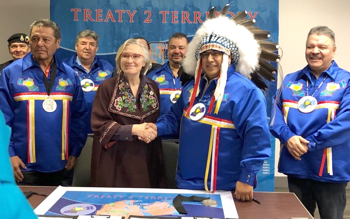

History of Treaty 2
Treaty 2 was first signed during August 1871 at the manitoba house fur trading post and has a land area of 92,462.6km².
What did the british want from this treaty?
The government wanted to gain land for the crown from the First Nations who already lived in the desired area and to locate them to reserves. The desired area was tract of land stretching roughly from the mouth of the Winnipeg River up north to the mouth of the Berens River.
Treaty 2 today
after 147 years Canada and Treaty 2 are renewing their relationship by signing a Protocol Agreement for Advancing Reconciliation. the protocol will help canada and treaty 2 work together and advance on reconciliation.
What did the indeginous peoples want from this treaty
The Natives of this treaty mostly wanted peace between the other tribes, peace between each other and an abundance of land to sustain their people. The Natives along with Her Majesty agreed that there would be no consumption or distribution of alcohol on the reserves, and it was strictly prohibited. the Natives would be able to have a school on each reserve whenever they wanted and they also would have enough land for each family to sustain a household of five.
Sources
fnt2t.com/index.php/reconciliation-rirsd/, fnt2t.com/index.php/2021/08/10/history-of -manitoba-house-treaty-2-on-august-21-1871, https://blog.hubspot.com/website/css-animation-examples